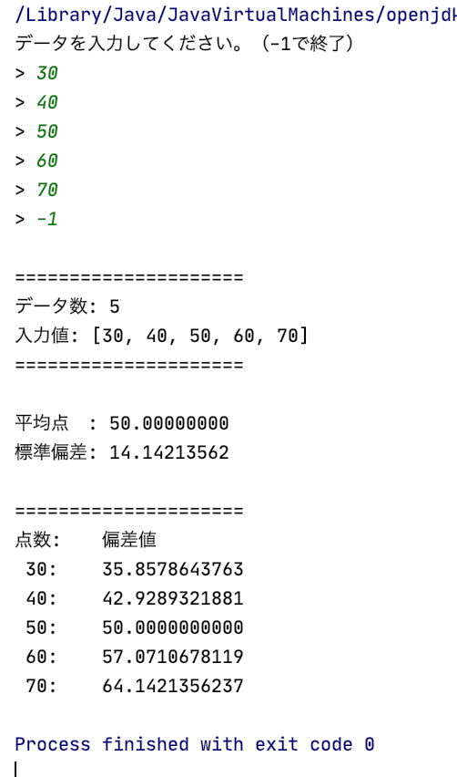

package net.kinokodata;
import java.util.Scanner;
public class Main {
public static void main(String[] args) {
// データを入れる配列
int[] scores = new int[100];
// データの実際の個数
int index = 0;
Scanner scanner = new Scanner(System.in);
// 入力処理
System.out.println("データを入力してください。（-1で終了）");
while(true) {
System.out.print("> ");
try {
int inputNumber = scanner.nextInt();
if(inputNumber < 0) {
break;
}
if(index >= scores.length) {
System.out.println("データが多すぎます。入力を終了します。");
break;
}
scores[index] = inputNumber;
index++;
} catch(Exception e) {
System.out.println("入力が不正です。");
scanner.next();
}
}
scanner.close();
// 入力値の出力
System.out.println("\n=====================");
System.out.println("データ数: " + index);
System.out.print("入力値: [");
for(int i = 0; i < index - 1; i++) {
System.out.print(scores[i] + ", ");
}
System.out.println(scores[index - 1] + "]");
System.out.println("=====================\n");
// 平均点の算出（データはindex-1まで入っている)
int sum = 0;
for(int i = 0; i < index; i++) {
sum += scores[i];
}
double average = (double)sum / index;
System.out.printf("平均点 : %3.8f\n", average);
// 標準偏差の算出
double sigma = 0;
for(int i = 0; i < index; i++) {
sigma += Math.pow((double)scores[i] - average, 2);
}
sigma /= index;
sigma = Math.sqrt(sigma);
// 標準偏差の出力
System.out.printf("標準偏差: %3.8f\n", sigma);
// 偏差値の算出
double[] deviations = new double[index];
for(int i = 0; i < index; i++) {
// 一応、標準偏差が0のときを考慮
if(sigma == 0) {
deviations[i] = 50;
} else {
deviations[i] = (scores[i] - average) / sigma * 10 + 50;
}
}
// 偏差値の出力
System.out.println("\n=====================");
System.out.println("点数:\t偏差値");
for(int i = 0; i < index; i++) {
System.out.printf("%3d:\t%3.10f\n", scores[i], deviations[i]);
}
}
}出力結果は以下
